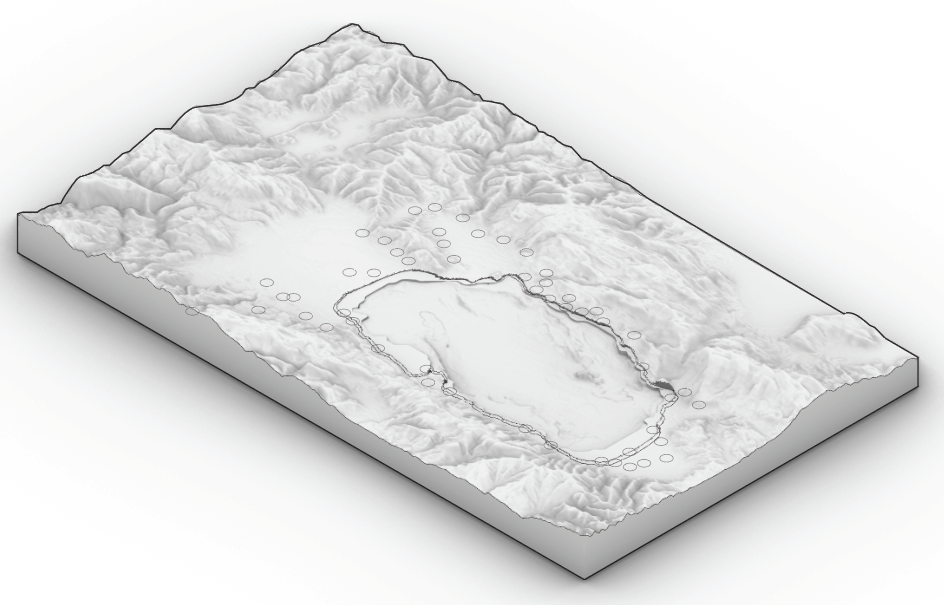

Shoreline pressure
Tourism and investment concentrate development along the lake, producing congestion and reducing public access to the landscape.
Final Thesis / Royal Danish Academy
A decentralisation strategy for the Ohrid UNESCO region, using renewal, adaptive reuse and territorial planning as alternatives to shoreline expansion.

Ohrid UNESCO region — lake, terrain, settlements and heritage landscape.
The thesis proposes a shift from market-led urban growth along the lake towards a distributed network of renewed rural settlements.
The Ohrid region is both a cultural archive and an environmental system. Its value is not only found in monuments, but also in landscapes, settlement patterns, vernacular building techniques, local materials, water systems and the everyday atmosphere of the region.
Tourism brings economic opportunity, but it also creates pressure. New apartment typologies increasingly occupy the city and shoreline, while existing buildings in smaller settlements remain empty, underused or non-valorised.
Instead of treating growth as the production of more new buildings, the project asks whether the existing territorial stock can become the main resource for future development.
Poorly planned urban development and generic market-led architecture threaten the spatial, cultural and environmental integrity of the Ohrid region.
Tourism and investment concentrate development along the lake, producing congestion and reducing public access to the landscape.
Smaller settlements contain existing houses, infrastructures and spatial qualities that remain unused while new construction expands elsewhere.
Local materials, craft knowledge, organic morphology and inherited spatial rules are weakened by fast, generic construction.
The project imagines the UNESCO region as a network of different settlements, each with a specific role, atmosphere and development capacity.
Read the region through lake, terrain, roads, trails, heritage sites, settlements and UNESCO boundaries.
Identify where development is concentrated and where alternative capacity already exists.
Recognise different rural typologies: cultural tourism, nature tourism, agro-tourism, housing, education and mixed uses.
Redirect development energy from new expansion toward existing buildings, local craft and landscape-sensitive programmes.
The architectural proposal evaluates existing rural building stock through three possible futures.
Repair, renovate and adapt a structure so it can continue its original or similar function, such as housing or local accommodation.
Reuse an existing building for a new programme, such as a visitor centre, cultural space, workshop, educational space or small public infrastructure.
Allow selected structures to return to nature, or carefully disassemble and reuse their materials within the settlement.
The abandoned village becomes a place to test how an existing settlement can be reactivated without losing its spatial identity.
The settlement is not treated as empty land, but as a living archive of spatial knowledge. Its buildings, ruins, routes and materials become the foundation for a sensitive form of cultural and nature-based tourism.
New development is therefore not added as an isolated object, but negotiated through the existing settlement structure.
The resource is already there — in the existing building stock, the landscape, and the knowledge embedded in the settlements.
A decentralised strategy can relieve pressure from the protected shoreline while reinforcing the values that made the Ohrid region a World Heritage landscape.
The future of the region does not need to depend only on new construction. Existing settlements can become active spatial, cultural and economic resources.
By renewing, transforming and sometimes returning structures to nature, the project proposes a more careful development logic — one that values what is already present.
The thesis suggests that architecture and planning can support not only physical growth, but also heritage protection, local identity, circular material use and a more balanced territorial future.